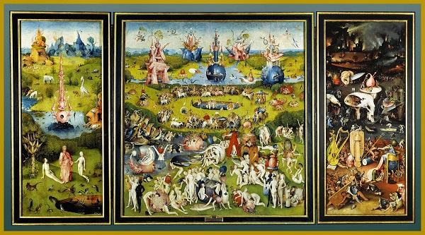
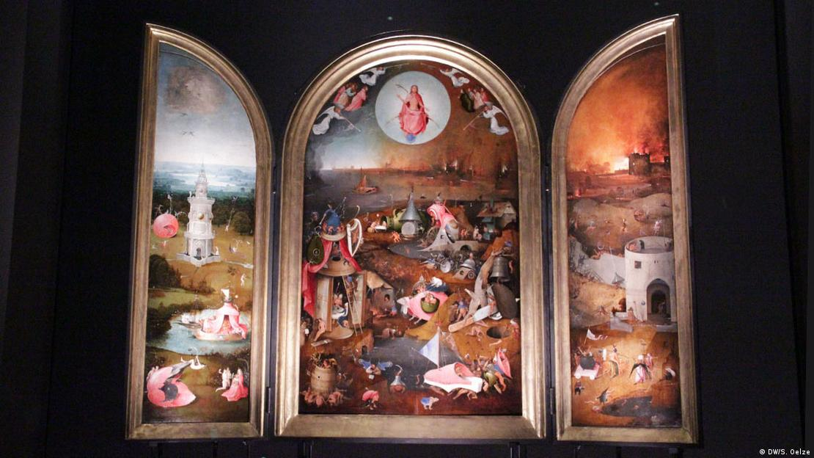

Летючі риби тягнуть пузаті човни річкою Дізе, на березі шкіриться рогата істота, її довгий хвіст обвивається довкола шиї. Нідерландське місто Гертогенбос причепурилося заради особливого свята цього року.
"Подорож у часі" пообіцяла відвідувачам Жюстін де Йонг з організації "bosch500". Більше 90 заходів, 13 виставок, театр, танці, "Подорож пеклом та раєм" річкою Дізе, вечірні світлові та музичні перформанси, навіть заупокійна меса.
Проте перш за все - чудернацькі істоти, завдяки яким Босх настільки відомий. Вони оселилися на середньовічних вулицях, площах та в парках. Монстри, казкові створіння та янголи зайшли до Герцогського лісу - саме так дослівно перекладається Гертогенбос.

Усі свої шедеври майстер створив у рідному Гертогенбосі. Донині збереглось близько 45, вони належать 18 колекціям у 10 країнах світу. Важко уявити, але жодна з них не зберігається в рідному місті. Картини повернулися лише тимчасово - для виставки "Ієронім Босх - бачення генія" в музеї Noordbrabants у Гертогенбосі, яка стала досі найбільшою виставкою художника. Нині ж роботи Босха виставлені в Музеї Прадо у Мадриді.
Аби отримати можливість виставити твори майстра у рідному місті, голландці зробили великим музеям привабливу пропозицію. Дев'ять років тому вони розпочали досі найбільший проект з дослідження та реставрації творів Ієроніма Босха. "За допомогою новітніх технологій ми провели експертизу малюнків та картин ", - каже Шарль де Моой, керівник музею Noordbrabants. Таким чином відреставровані вже 12 робіт.
